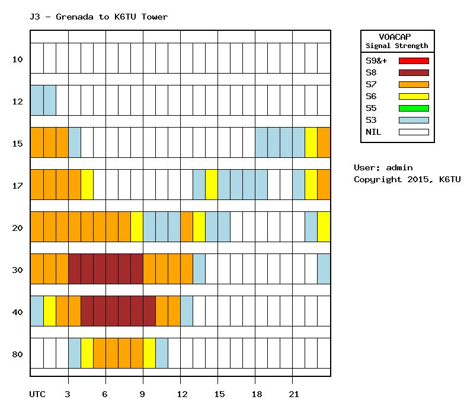

|
I heard Rich
on CW on 12 M at 1955Z but he said QSY to SSB as I was calling. Anna came
on at 250 and I worked her 5 up after she worked a F-station. Weak for
sure and glad to get the QSO before it got too busy.
Hoping to
find them on 17 phone, too.
Thanks for
the prediction.
73 de
Al
N6TA From: Chat [mailto:chat-bounces@ncdxc.org] On Behalf Of Stuart Phillips via Chat Sent: Monday, May 25, 2015 2:18 PM To: Al N6TA via Chat Subject: [NCDXC Chat] J38NN 24.950 QSX 24.955 - barely audible For those looking to work Rich and Anna on Grenada, here’s the current
point to point prediction for my QTH here in Woodside:
Very tough slogging on 12m – can barely make out Anna’s voice but its not
workable right now.
Stu K6TU
 |